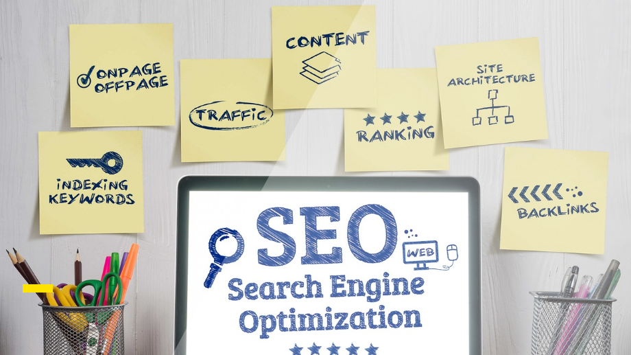

1. Affiliate Marketing
Affiliate marketing is a great way to make money online, and it's something that anyone can do. If you're looking for a flexible and low-risk way to earn money from home, then affiliate marketing is definitely worth considering.
One of the main benefits of affiliate marketing is that it doesn't require any upfront investment. Unlike other online businesses where you have to invest a lot of time and money into creating products or building a website, with affiliate marketing, you simply promote other people's products and earn a commission on each sale. This means that you can start earning money with very little investment or risk.
Another benefit of affiliate marketing is that it's a very flexible business model. You can choose to promote products in any niche or industry that you're interested in, and you can work from anywhere in the world as long as you have an internet connection. This means that you can build a business around your passions and interests, and you can work on your own terms.
Affiliate marketing is also a scalable business model. As you gain more experience and learn what works best, you can expand your business and promote more products. You can also outsource some of the tasks involved in affiliate marketing, such as content creation or advertising, which means that you can grow your business without having to work more hours.
One of the best things about affiliate marketing is that it can be a very lucrative business. If you choose the right products to promote and you put in the effort to promote them effectively, you can earn a significant amount of money as an affiliate marketer. In fact, there are many affiliate marketers who are earning six-figure incomes or more each year.
If you're looking for a way to make money online, then affiliate marketing is definitely worth considering. It's a low-risk and flexible business model that offers a lot of potential for earning money and building a business around your passions and interests. With some effort and dedication, you can become a successful affiliate marketer and enjoy the freedom and flexibility of working from home.
Average salary for an Affiliate Marketer: $14,798 per month

2. Search Engine Optimization
Search Engine Optimization (SEO) is one of the most effective ways to drive traffic to your website, and it's something that any business or website owner should consider. SEO involves optimizing your website and content to rank higher in search engine results pages, which can lead to more traffic, more leads, and ultimately, more revenue.
One of the main benefits of SEO is that it can be a very cost-effective way to drive traffic to your website. While paid advertising can be expensive, SEO is essentially free, aside from the time and effort required to implement it. This means that SEO can be a great option for businesses with limited marketing budgets.
Another benefit of SEO is that it can lead to highly targeted traffic. When you optimize your website and content for specific keywords and phrases, you can attract people who are actively searching for products or services related to your business. This means that the traffic you receive from SEO is likely to be highly engaged and more likely to convert into customers or leads.
SEO is also a long-term strategy that can provide sustainable results over time. While paid advertising can provide a quick boost in traffic, it's often short-lived. With SEO, on the other hand, you can build a solid foundation that can continue to drive traffic to your website for months or even years to come.
One of the best things about SEO is that it's constantly evolving. While this can be a challenge, it also means that there's always room for improvement and innovation. By staying up-to-date with the latest SEO best practices and trends, you can continue to optimize your website and content for better results.
If you're looking to drive more traffic to your website and attract more customers or leads, then SEO is definitely worth considering. It's a cost-effective and sustainable way to improve your online presence and reach more people. With some effort and dedication, you can implement effective SEO strategies and enjoy the benefits of increased traffic, better search engine rankings, and higher revenue.
Average salary for an SEO Analyst: $63,614 per year
3. Social Media Marketing
Social media marketing has become an essential part of any modern marketing strategy. With billions of people using social media platforms every day, it's a powerful tool for businesses to connect with their target audience and promote their products or services. Here are some reasons why you should consider doing social media marketing:
One of the biggest benefits of social media marketing is its reach. With platforms like Facebook, Instagram, and Twitter, you can reach a vast audience of potential customers from all around the world. This can help you to increase brand awareness and attract more people to your business.
Social media marketing also offers a high level of targeting. With the ability to target specific demographics, interests, and behaviors, you can ensure that your marketing messages are reaching the people who are most likely to be interested in your products or services. This can help to improve the effectiveness of your marketing campaigns and maximize your return on investment.
Another benefit of social media marketing is that it's a great way to engage with your audience. Social media platforms offer a range of tools that allow you to interact with your followers, respond to comments and messages, and build relationships with your customers. By engaging with your audience, you can build trust and loyalty, which can lead to increased customer retention and repeat business.
Social media marketing is also a cost-effective way to promote your business. While traditional advertising methods can be expensive, social media marketing offers a range of affordable options, including sponsored posts and targeted ads. This means that even businesses with small marketing budgets can take advantage of the benefits of social media marketing.
If you're looking to grow your business and reach more customers, then social media marketing is definitely worth considering. With its vast reach, targeting capabilities, and engagement tools, it's a powerful way to connect with your audience and promote your products or services. By investing some time and effort into social media marketing, you can build a strong online presence and take your business to the next level.
Average salary for a Social Media Marketer: $3,940 per month

4. Pay-Per Click Advertisement
Pay-per-click (PPC) advertising is a powerful marketing tool that can help businesses of all sizes to reach their target audience and drive more traffic to their website. Here are some reasons why you should consider doing PPC advertising:
One of the main benefits of PPC advertising is its flexibility. With PPC, you can set your own budget and control your spending, allowing you to allocate your marketing dollars in the most effective way possible. This means that you can adjust your campaigns as needed to optimize your results and get the most bang for your buck.
Another benefit of PPC advertising is its targeting capabilities. With PPC, you can target specific keywords, locations, interests, and behaviors, ensuring that your ads are reaching the people who are most likely to be interested in your products or services. This can help to improve the effectiveness of your campaigns and drive more qualified leads to your website.
PC advertising also offers fast results. Unlike some other marketing strategies that may take weeks or months to show results, PPC can provide almost instant feedback. This means that you can quickly adjust your campaigns to improve your results and maximize your ROI.
PPC advertising is also highly measurable. With tools like Google Analytics, you can track the performance of your campaigns and see exactly how many clicks, conversions, and sales you're generating. This allows you to make data-driven decisions and optimize your campaigns for better results.
If you're looking to drive more traffic to your website and attract more leads and customers, then PPC advertising is definitely worth considering. With its flexibility, targeting capabilities, fast results, and measurable performance, it's a powerful marketing tool that can help you to achieve your business goals. By investing in PPC advertising, you can reach your target audience and grow your business in a cost-effective way.
Average salary for a PPC Analyst: $5,153 per month
5. Email Marketing
Email marketing is a powerful tool that can help businesses to connect with their customers and promote their products or services. Here are some reasons why you should consider doing email marketing:
One of the biggest benefits of email marketing is its reach. With billions of people using email every day, it's a powerful way to connect with your target audience and deliver your marketing messages directly to their inbox. This can help to increase brand awareness, generate more leads, and drive more sales for your business.
Email marketing also offers a high level of targeting. With the ability to segment your email list based on demographics, interests, and behaviors, you can ensure that your marketing messages are reaching the people who are most likely to be interested in your products or services. This can help to improve the effectiveness of your campaigns and maximize your ROI.
Another benefit of email marketing is its cost-effectiveness. Compared to other marketing strategies, email marketing is relatively inexpensive, making it accessible for businesses of all sizes. This means that even small businesses can take advantage of the benefits of email marketing and compete with larger companies in their industry.
Email marketing is also a great way to build relationships with your customers. By sending regular emails that provide value and engage your audience, you can build trust and loyalty, which can lead to increased customer retention and repeat business.
If you're looking to connect with your customers and grow your business, then email marketing is definitely worth considering. With its reach, targeting capabilities, cost-effectiveness, and relationship-building potential, it's a powerful tool that can help you to achieve your marketing goals. By investing in email marketing, you can deliver your marketing messages directly to your target audience and drive more leads and sales for your business.
Average salary for a Email Marketer: $4,955 per month
6. Conversion Rate Optimization
Conversion rate optimization (CRO) is the process of improving your website or landing page to increase the number of visitors who take a desired action, such as making a purchase, filling out a form, or subscribing to a newsletter. Here are some reasons why you should consider doing conversion rate optimization:
One of the biggest benefits of CRO is its ability to increase your website's ROI. By improving the conversion rate of your website, you can generate more leads and sales without increasing your traffic or marketing spend. This means that you can get more value from your existing website traffic and marketing efforts, which can help to improve your bottom line.
CRO also helps to improve the user experience of your website. By identifying and fixing usability issues, reducing friction, and improving the overall design of your website, you can create a better experience for your visitors, which can lead to increased engagement, trust, and loyalty.
Another benefit of CRO is its ability to provide valuable insights about your audience. By analyzing user behavior, tracking conversion rates, and conducting A/B tests, you can learn more about what motivates your audience, what drives conversions, and what obstacles are preventing people from taking action on your website.
CRO is also a continuous process, meaning that you can make ongoing improvements to your website over time. By regularly testing and tweaking your website, you can refine your strategy and improve your results, which can help you to stay ahead of your competition and keep your website performing at its best.
If you're looking to improve the performance of your website and drive more leads and sales, then conversion rate optimization is definitely worth considering. With its ability to increase ROI, improve user experience, provide valuable insights, and offer ongoing improvements, CRO is a powerful tool that can help you to achieve your marketing goals. By investing in CRO, you can optimize your website for better results and grow your business in a cost-effective way.
Average salary for a CRO Analyst: $7,624 per month

7. Analytics and Data Analysis
Analytics and data analysis have become increasingly important in today's digital age. By collecting, analyzing, and interpreting data, businesses can gain valuable insights that can help them to make more informed decisions and improve their performance. Here are some reasons why you should consider investing in analytics and data analysis:
One of the biggest benefits of analytics and data analysis is its ability to help businesses make data-driven decisions. By analyzing data from multiple sources, such as website traffic, social media engagement, and sales data, businesses can gain a deeper understanding of their audience, identify trends, and make informed decisions about their marketing strategy.
Analytics and data analysis can also help businesses to improve their performance by identifying areas of opportunity and areas that need improvement. By analyzing data on key metrics, such as conversion rates, bounce rates, and engagement rates, businesses can identify which parts of their website or marketing campaigns are performing well and which areas need improvement.
Another benefit of analytics and data analysis is its ability to help businesses optimize their marketing efforts. By tracking and analyzing the performance of different marketing channels, businesses can identify which channels are driving the most traffic and conversions, and adjust their strategy accordingly. This can help to improve ROI and make the most of their marketing budget.
Analytics and data analysis can also help businesses to improve customer experience by providing insights on customer behavior and preferences. By analyzing data on customer interactions and feedback, businesses can identify areas where they can improve their customer service and tailor their products or services to better meet the needs of their customers.
If you're looking to improve your business performance and make more informed decisions, then investing in analytics and data analysis is definitely worth considering. With its ability to provide valuable insights, identify areas of opportunity, optimize marketing efforts, and improve customer experience, analytics and data analysis can help you to achieve your business goals and stay ahead of your competition. By investing in analytics and data analysis, you can unlock the full potential of your data and gain a competitive edge in today's digital marketplace.
Average salary for a Data Analyst: $5,106 per month
8. Search Engine Marketing
Search engine marketing (SEM) has become an essential component of any digital marketing strategy. By using paid search ads to target specific keywords, businesses can increase their visibility and drive more traffic to their website. Here are some reasons why you should consider investing in search engine marketing:
One of the biggest benefits of SEM is its ability to drive highly targeted traffic to your website. By targeting specific keywords and demographics, businesses can reach their ideal audience and generate high-quality leads and sales. This can help to improve ROI and make the most of your marketing budget.
SEM is also a cost-effective way to drive traffic to your website. Unlike traditional advertising methods, such as TV or print ads, you only pay when someone clicks on your ad. This means that you can control your advertising spend and make sure that you're getting the most value from your budget.
Another benefit of SEM is its ability to provide valuable insights into your audience. By analyzing data on keyword performance, click-through rates, and conversion rates, businesses can gain a deeper understanding of their audience and adjust their marketing strategy accordingly. This can help to improve the effectiveness of your marketing campaigns and drive better results.
SEM is also a great way to stay ahead of your competition. By targeting the same keywords as your competitors, you can compete for the same audience and make sure that your business is visible to potential customers. This can help to increase brand awareness, drive more traffic, and generate more leads and sales.
Average salary for a Search Engine Marketing Specialist: $4,679 per month

9. Web Development
Learning web development can be a game-changer for your career or business. In today's digital age, having the ability to create and maintain a website can open up many opportunities and give you a competitive edge. Here are some reasons why you should consider learning web development:
One of the biggest benefits of learning web development is the ability to create a website from scratch. By learning the fundamentals of HTML, CSS, and JavaScript, you can build a website that is tailored to your specific needs and preferences. This can be a valuable skill for entrepreneurs, freelancers, or anyone looking to create an online presence.
Learning web development can also help you to better understand how websites work. By understanding the structure and functionality of websites, you can troubleshoot issues and make improvements to your own website. This can help to improve the user experience and drive more traffic and conversions.
Another benefit of learning web development is the ability to customize existing websites. By learning popular content management systems, such as WordPress or Drupal, you can create custom themes and plugins to enhance the functionality of a website. This can be a valuable skill for developers, designers, or anyone looking to add value to their clients' websites.
Learning web development can also open up many job opportunities. With the demand for web developers on the rise, there is a growing need for skilled developers who can create and maintain websites for businesses of all sizes. By learning web development, you can gain a valuable skill set that can help you to land a high-paying job or start your own web development business.
If you're looking to enhance your skill set, boost your career, or start your own business, then learning web development is definitely worth considering. With its ability to create and maintain websites, improve user experience, customize existing websites, and open up many job opportunities, web development is a valuable skill that can help you to achieve your goals. By investing in web development, you can stay ahead of the curve and take advantage of the many opportunities that the digital age has to offer.
Average salary for a Web Developer: $5,366 per month

10. Content Marketing
Content marketing has become an essential part of any successful marketing strategy. By creating and sharing valuable content, businesses can attract and engage their target audience, drive traffic to their website, and ultimately generate more leads and sales. Here are some reasons why you should consider learning content marketing:
One of the biggest benefits of content marketing is its ability to build trust and credibility with your audience. By creating high-quality content that is relevant and valuable to your target audience, you can establish yourself as an expert in your industry and build trust with potential customers. This can help to improve your brand reputation and drive more sales over time.
Content marketing is also a cost-effective way to drive traffic to your website. Unlike paid advertising, which can be expensive, content marketing relies on creating valuable content that attracts visitors to your website organically. By optimizing your content for search engines and promoting it on social media, you can drive more traffic to your website without breaking the bank.
Another benefit of content marketing is its ability to generate leads and sales. By creating content that is tailored to your target audience's needs and interests, you can attract visitors to your website who are more likely to become customers. By including calls to action in your content, you can encourage visitors to take the next step, whether that's subscribing to your newsletter, downloading a free resource, or making a purchase.
Learning content marketing can also help you to stay ahead of the competition. By creating high-quality content that is unique and valuable to your target audience, you can differentiate yourself from your competitors and build a loyal following. This can help to improve brand awareness, drive more traffic, and generate more leads and sales over time.
If you're looking to improve your marketing strategy, build trust with your audience, and drive more leads and sales, then learning content marketing is definitely worth considering. With its ability to build trust and credibility, drive traffic, generate leads and sales, and stay ahead of the competition, content marketing is a powerful tool that can help you to achieve your marketing goals. By investing in content marketing, you can improve your ROI, make the most of your marketing budget, and grow your business in a cost-effective way.
Average salary for a Content Marketer: $4,680 per month
11. Video Editing
Video editing is an incredibly valuable skill in today's digital world. From social media to corporate videos, the demand for high-quality video content is growing rapidly. Learning video editing can open up many opportunities for you, both personally and professionally.
Here are some reasons why you should consider learning video editing:
1. Creativity: Video editing is a creative process that allows you to express yourself and your ideas in a visual medium. You have the ability to bring your vision to life and create something truly unique.
2. Career opportunities: The demand for video content is increasing, and so is the need for skilled video editors. By learning video editing, you can open up career opportunities in a variety of industries, from marketing to film production.
3. Personal projects: Video editing is not just for professionals. It's also a great skill to have for personal projects, such as creating vlogs or family videos. You can capture and edit memories that will last a lifetime.
4. Flexibility: Video editing can be done from anywhere, as long as you have a computer and internet connection. This means you can work from home or even while traveling. You can also choose your own working hours and schedule, making it a great option for those who want to work freelance or part-time.
5. High earning potential: Video editing can be a high-paying job, especially if you work with big clients or specialize in a particular type of video content. You can also work on a freelance basis and charge your own rates.
In conclusion, learning video editing is a valuable skill that can bring many benefits, both personally and professionally. It allows you to express your creativity, opens up career opportunities, and provides flexibility in how and when you work. So why not give it a try and see where it takes you?
Average salary for a Video Editor: $3,377 per month

12. Marketing Automation
Marketing automation is a valuable skill that can help you succeed in the field of marketing. Marketing automation is the process of using software tools to automate repetitive marketing tasks, such as email marketing, social media posting, and lead generation.
Marketing automation has become increasingly important in today's digital age, where businesses need to be efficient, targeted, and personalized to succeed. Here are some of the benefits of marketing automation:
1. Increased efficiency: By automating repetitive marketing tasks, businesses can save time and resources, allowing them to focus on other important aspects of their marketing strategy.
2. Personalization: Marketing automation allows for personalized marketing messages to be sent to individual customers based on their behavior and preferences. This creates a more intimate connection between the business and the customer, increasing the chances of a sale.
3. Targeted marketing: With marketing automation, businesses can target specific segments of their audience with personalized messages. This helps to improve the relevance and effectiveness of their marketing campaigns.
4. Analytics: Marketing automation tools provide valuable analytics that can help businesses track the performance of their marketing campaigns and make data-driven decisions to optimize their strategy.
By learning marketing automation, you can help businesses to achieve their marketing goals more efficiently and effectively. It's a valuable skill that can set you apart from others in the field of marketing.
In conclusion, marketing automation is a valuable skill that can help businesses to streamline their marketing efforts and achieve better results. By learning marketing automation, you can help businesses to improve their efficiency, personalization, and targeted marketing, while also providing valuable analytics to optimize their strategy.
Average salary for a Marketing Automation Specialist: $5,894 per month
13. Copywriting
Copywriting is the art of using words to persuade people to take action, whether it's buying a product, signing up for a service, or clicking a link. It's a powerful tool that can make or break a marketing campaign.
Copywriting involves the creation of compelling and persuasive written content that engages the reader and encourages them to take action. This can include anything from website copy and product descriptions to email marketing and social media posts. The key is to create content that resonates with the reader and inspires them to take action.
One of the biggest benefits of copywriting is its ability to drive sales. Well-crafted copy can increase conversions, boost sales, and ultimately grow your business. It's also a cost-effective way to market your products or services, as it can be done without the need for expensive advertising.
Copywriting is also a skill that can be learned and developed over time. By studying the techniques and principles of successful copywriting, you can improve your writing skills and create more effective marketing content. This includes understanding your target audience, developing a unique voice, and crafting headlines and calls to action that capture the reader's attention.
In conclusion, copywriting is a valuable skill for anyone in the world of marketing. By mastering the art of persuasive writing, you can create content that engages your audience, drives sales, and grows your business. So, if you're interested in improving your marketing efforts, consider investing time in developing your copywriting skills.
Average salary for a Copywriter: $4,127 per month
14. Mobile App Development
With the rise of smartphones and mobile devices, mobile apps have become an essential part of our daily lives. From social media to shopping, mobile apps are used for everything, and there is a growing demand for skilled mobile app developers.
Mobile app development is the process of creating software applications that run on mobile devices, such as smartphones and tablets. Mobile app development involves a combination of programming skills, design expertise, and knowledge of mobile operating systems and platforms.
The benefits of learning mobile app development are numerous. Here are just a few:
1. Career opportunities: Mobile app development is a rapidly growing field, and there is a high demand for skilled developers. This means that learning mobile app development can lead to a wide range of career opportunities, including freelance work, employment with tech companies, and entrepreneurship.
2. Innovation: Mobile app development is a field that is constantly evolving, with new technologies and trends emerging all the time. By learning mobile app development, you can stay up-to-date with the latest advancements in the field and be at the forefront of innovation.
3. Creativity: Mobile app development allows you to exercise your creativity and bring your ideas to life. From designing user interfaces to developing unique features, mobile app development offers endless opportunities for creativity.
4. Financial benefits: With the high demand for mobile apps, mobile app developers can earn a significant income. In addition, mobile apps have the potential to generate revenue through advertising, in-app purchases, and subscription models.
In conclusion, mobile app development is a valuable skill that offers numerous benefits. From career opportunities to creativity, mobile app development is a field that is both challenging and rewarding. So if you're looking to expand your skill set or embark on a new career path, learning mobile app development could be the perfect choice for you.
Average salary for a Mobile App Developer: $5,962 per month
15. Graphic Design
Graphic design involves the creation of visual content, such as logos, brochures, websites, and social media posts, to effectively communicate a message to an audience.
Graphic design is an essential part of any marketing strategy, as it plays a significant role in creating a brand's image and identity. A well-designed logo, website, or brochure can make a business stand out from its competitors, attract customers, and increase sales.
Another benefit of graphic design is its ability to convey a message in a visual and memorable way. People are more likely to remember visual content than written content, and graphic design can effectively communicate a message to an audience in a way that is both attractive and memorable.
Graphic design is also a versatile skill that can be used in various industries and job positions. From marketing and advertising to web design and video production, graphic design skills are in high demand and can open up a wide range of career opportunities.
In conclusion, graphic design is a valuable skill to have in today's digital world. It plays a crucial role in creating a brand's image and identity, effectively communicating a message to an audience, and opening up various career opportunities.
Average salary for a Graphic Designer: $3,784 per month
16. Blogging
Blogging has become a popular way to share information and opinions on the internet, and it can be a valuable skill to have in today's digital age.
Blogging involves creating content on a regular basis, typically in the form of articles or posts, on a website or blog. The benefits of blogging are numerous, including improved writing and communication skills, increased online visibility, and the ability to build an audience or following.
One of the greatest benefits of blogging is the opportunity to improve your writing and communication skills. By regularly creating content, you will naturally become better at writing and communicating your thoughts and ideas in a clear and concise manner. This can be useful in both personal and professional settings, as good writing and communication skills are highly valued in many fields.
Blogging also allows you to increase your online visibility. By consistently creating content, you can improve your website's search engine rankings, making it easier for people to find and discover your content. This can lead to increased traffic to your website and potentially even more business opportunities.
Another advantage of blogging is the ability to build an audience or following. By providing valuable content on a regular basis, you can attract readers who are interested in your niche or topic. This can lead to a loyal following and even potential business opportunities or collaborations.
In conclusion, blogging can be a valuable skill to have in today's digital age. It can improve your writing and communication skills, increase your online visibility, and help you build an audience or following. Whether you are interested in blogging for personal or professional reasons, it's a skill worth considering.
Average salary for a Blogger: $2,521 per month

17. Mobile Marketing
Mobile marketing is becoming increasingly important in the world of marketing. With more and more people using mobile devices every day, businesses need to adapt and create strategies that effectively reach their target audience on these devices.
Mobile marketing involves the use of mobile devices to promote products or services to potential customers. This includes mobile apps, mobile websites, SMS marketing, and mobile advertising. The benefits of mobile marketing are numerous, including increased reach, personalization, cost-effectiveness, and real-time analytics.
One of the biggest advantages of mobile marketing is the ability to reach a wider audience. With people using their mobile devices for everything from communication to entertainment, businesses have the opportunity to connect with potential customers wherever they are, at any time. This creates a greater opportunity to convert these leads into sales.
Another benefit of mobile marketing is personalization. With mobile devices, businesses can tailor their marketing messages to individual customers based on their preferences, location, and behavior. This creates a more intimate connection between the business and the customer, increasing the likelihood of a sale.
Mobile marketing is also a cost-effective way to reach your audience. It's less expensive than traditional marketing methods and can provide a higher return on investment. With real-time analytics, businesses can track the performance of their mobile marketing campaigns and optimize them for better results.
In conclusion, mobile marketing is an essential part of any marketing strategy. With more and more people using mobile devices every day, businesses need to adapt and create strategies that effectively reach their target audience on these devices. By utilizing mobile marketing, businesses can increase their reach, create personalized marketing messages, and achieve better results at a lower cost.
Average salary for a Mobile Marketing Specialist: $5,542 per month

18. UI/UX Design
UI/UX stands for user interface and user experience, and it is the process of designing digital products with the user in mind.
UI/UX design is crucial because it affects how users interact with a product. It involves creating intuitive, user-friendly interfaces that are easy to navigate and understand. Good UI/UX design can make a product stand out in a crowded market, attract more users, and increase customer satisfaction.
One of the main benefits of UI/UX design is its ability to create a positive user experience. This involves designing interfaces that are easy to use, visually appealing, and intuitive. Users should be able to navigate a product without having to think too much about how it works.
Another benefit of UI/UX design is its ability to increase customer satisfaction. By creating a positive user experience, customers are more likely to enjoy using a product and continue using it in the future. This can lead to increased customer loyalty, positive reviews, and increased revenue.,/p>
UI/UX design is also important for businesses because it can increase the effectiveness of their digital products. By designing interfaces that are easy to use and understand, businesses can increase the efficiency of their product and reduce the risk of user errors. This can save time and money for both the business and the user.
In conclusion, UI/UX design is a valuable skill that is becoming increasingly important in the world of technology and design. By designing interfaces that are easy to use, visually appealing, and intuitive, businesses can create a positive user experience, increase customer satisfaction, and improve the effectiveness of their digital products.
Average salary for a UX/UI Designer: $8,130 per month
19. Content Creation
With the rise of social media, blogs, and online platforms, businesses and individuals alike need to create high-quality content to engage their audience and stand out from the competition.
Content creation involves creating and sharing various types of media that capture the attention of your audience. This includes blog posts, social media posts, videos, podcasts, infographics, and more. The benefits of content creation are numerous, including increased brand awareness, audience engagement, and improved search engine rankings.
One of the biggest advantages of content creation is the ability to increase brand awareness. By creating high-quality content that is useful and engaging, businesses and individuals can increase their visibility and reach a wider audience. This can lead to increased traffic, more leads, and ultimately more sales.
Another benefit of content creation is audience engagement. By creating content that is valuable and relevant to your audience, you can increase engagement and build a loyal following. This can lead to increased trust and credibility, which can ultimately lead to more sales.
Content creation can also improve search engine rankings. By creating high-quality content that is optimized for search engines, businesses and individuals can improve their visibility in search results and drive more traffic to their website or online platform.
In conclusion, content creation is an essential skill for anyone looking to succeed in today's digital age. By creating high-quality content that is valuable and relevant to your audience, you can increase brand awareness, audience engagement, and improve search engine rankings.
Average salary for a Content Creator: $3,906 per month

20. Content Writing
Content writing is a skill that involves creating engaging, informative, and persuasive content for websites, blogs, social media, and other digital platforms.
With the rise of digital marketing and e-commerce, content writing has become an essential skill for anyone looking to succeed in these fields. Here are some reasons why content writing skills are so important:
1. Attracting and Engaging Customers: In today's digital world, customers are inundated with information. Good content writing skills allow you to create content that stands out, attracting and engaging potential customers. This can lead to increased traffic to your website, more sales, and greater brand recognition.
2. Building Trust and Credibility: Good content writing can help you build trust and credibility with your audience. By providing informative and helpful content, you position yourself as an expert in your field, which can lead to increased trust and loyalty from your customers.
3. SEO Optimization: Content writing is an important part of search engine optimization (SEO). Good content can help improve your website's ranking on search engines like Google, which can lead to increased traffic and sales.
4. Social Media Marketing: Content writing is also essential for social media marketing. Social media platforms like Facebook, Twitter, and Instagram rely on engaging content to attract and retain users. Good content writing can help you create content that is shared, liked, and commented on, increasing your reach and visibility.
In conclusion, content writing is a valuable skill to have in today's digital world. It can help you attract and engage customers, build trust and credibility, improve your SEO, and succeed in social media marketing. I encourage you to consider developing your content writing skills to enhance your professional and personal growth.
Average salary for a Content Writing: $4,433 per month